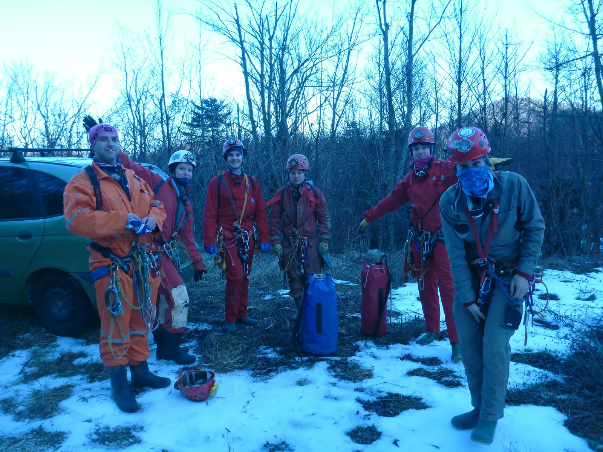

Nova Godina u Kiti ili Netko nas sabotira
Poučak: kada u jamu uneseš konjske pljeskavice i ukulele, Kita se produlji preko 37 kilometara. Više o tom poučku:

Napisale: Ana Vidić i Ela Kovač Fotografirali: Ana Bakšić i Lovel Kukuljan
Još prije Božića najavljen je kažin. Metar snijega u Gračacu, a kako li je tek na Crnopcu. Ipak, hrabro smo odlučili poći u avanturu. Ekipa kreće iz Zagreba i Banja Luke u petak. Neki već isti dan ulaze u jamu, a to su Marijan, Mašina, Fero, Marina i Lovel. Ostatak ostaje prespavati u kultnom hotelu ispred Cerovačkih pećina. ( Anal, Ana B., Ela, Vito, Jolly, Dejo i Brala). Iduće jutro dolaze braća Vidić. Svi skupa isti dan malo iza ručka krećemo prema okretaljci i uspješno savladavamo put, bez većih drama.
[caption id="attachment_2174" align="alignnone" width="2000"] Na okretaljci, pred ulazak u jamu[/caption]Nalazimo se na trulom bivku već oko 7 i odmah napadamo konjske pljeske po prvi puta u jami. Fun fact: Osim pljeski po prvi puta u jamu unešene i ukulele. Na bivku nalazimo poruku da su dečki u Hrustavom kanalu i da se vraćaju rano ujutro te da ne trebamo čekati. Istraživali su kanal Suggar Hype koji se nastavlja.
Na uranku dana 30.12. subotnja ekipa sprema se za istraživanje u Kiti u Velebita, a dijeli se na dva tima od kojih prva ide u Auspuh, a druga do Neudatih žena. Cijeli dan prolazi radno. Kanali su uski ali nije nam žao jer nailazimo na brojne špiljske ukrase. Auspuh je pun netaknutih bijelih helektita neobičnih i vijugavih oblika. Crta se, mjeri, buši i penje. Za vrijeme večere svi se vraćamo na bivak. Tamo opet poruka da su Marijan Express i Marin Mašina izišli iz jame. Taman u trenutku kad smo se vratili na bivak u daljini se čuje Marinin smijeh. Lovel i Marina bili su dan prije na prvoj etaži, u Jelinjaku gdje se proširivalo kako bi se približili Mudima. Korak su bliže, ali ima još posla. A 30.12. skupa sa Ferom otvorili su upitnik u Bruninom ljubavnom gnjezdu. Kad smo se svi skupili pripremili smo večeru, zatim malo kerozina za dušu- da ugrijemo naša "bedna i izmučena telesa". 31.12. na Staru Godinu Marina i Lovel penju Level up. Isti tim plus Fero ide za Auspuh. Ana B., Joviša i Brala penju kod Popišanih račića u kojima su uspjeli zatvoriti dva upitnika, a ostali istražuju i zatvaraju Dramu i 4 kamenova, upitnik iznad siga u Borer Lee kanalu. Šta tu nije jasno.
[caption id="attachment_2182" align="alignnone" width="2864"] Novogodišnji tulum u Kiti[/caption]Neudate žene i gospodin savršeni (Pava, Ela i Dejo) nastavljaju istraživanje. Žene se šire u svim smjerovima, dok glavni meandar nastavlja dalje u istom smjeru. Gospodin savršeni prečka i buši Neudate žene. Meandri su uski ali gospodin ne odustaje. Sve Ide dalje (aaaaa sve). Ekipa iz Auspuha vraća se na bivak. Auspuh je raspremljen i nacrtan. Neudate žene su na knap, 15 minuta prije dočeka. Kad smo se svi okupili počinje fešta. Gozba, glazba i piće. U novu godinu ulazimo sretni i zadovoljni. Za 15 minuta čestitamo i našim kolegama banjalučanima, simbolike radi. 1.1. 2019. posprema se bivak, popisuje oprema, sakupljaju dojmovi, posipa se wc i spremni smo za polazak. Oko 12 krećemo prema gore. U 7 smo bili vani, a banjalučani 15 min kasnije, simbolike radi. Marina i Lovel odmah su otišli za Rijeku, a ostali trk u birtiju, budući da je vani bio debeli minus. Da bi stvari bile još bolje (ili gore) dobivamo poziv od dva Velebitaša, dva galeba, Nike i Stipe, da stižu po nas i da idemo na after party kod njih u Deringaj. A, ne,ne, nećete ovdi bit gladni. Večer je prošla uz prasetinu, grah, puno rakije, dobro društvo i puno rakije. Kakav kraj i kakav veličanstveni početak. Život je bajka. Ukupno je nacrtano 484 novih metara, a trenutna duljina Kite iznosi 37 389 metara. OVAKO VIŠE NE IDE!!
Sudionici: Ana Bakšić ( B kao bednica) , Joviša Bajić (Jolly konj), Dejan Blaženović ( Dejo konjska pljeska), Miloš Šobot (Brala), Pava i Ana Vidić (braća Vidić), Ana Lipovac (AnaL), Ela Kovač ( Miloš ali ne Šobot), Vito Danevski ( Don Vito Corleone), Vedran Ferenčak ( Fero komad blata), Marina Grandić ( zna se), Lovel Kukuljan (Level), Marijan Sutlović ( Marijan express), Marin Mašina ( ex Machina)
Klubovi: SOV, SD Ponir, SU Estavela EPILOG: pripremila Aida Barišić I suma sumarum jamski sustava Kita Gaćešina - Draženova puhaljka:- 14,5 godina sustavnog istraživanja 37.389 metara duljine ili 37,4 kilometra i 737 metara dubine
- Najveći broj istraživanja je u 2018. – ukupno 16 sa 3.074 novonacrtana metra ili 192m prosječno (no po broju nacrtanih metara 5. rezultat – dakle teški metri)
- 145 istraživanja ukupno; 279 speleologa od čega 87 žena i 192 muškarca iz 37 udruga od toga 7 van RH
- 16 speleologa sa više od 10 istraživanja iz 5 udruga